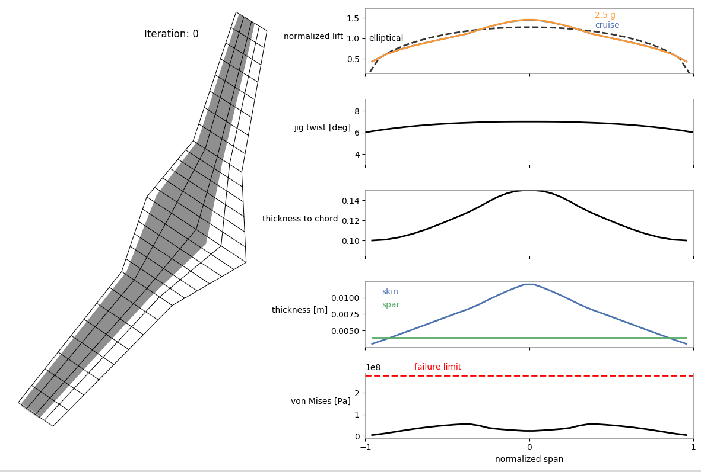

User-Provided Mesh Example¶
Here is an example script with a custom mesh provided as an array of coordinates. This should help you understand how meshes are defined in OpenAeroStruct and how to create them for your own custom planform shapes. This is an alternative to the helper-function approach described in Aerodynamic Optimization Walkthrough.
The following shows the portion of the example script in which the user provides the coordinates for the mesh. This example is for a wing with a kink and two distinct trapezoidal segments.
# -----------------------------------------------------------------------------
# CUSTOM MESH: Example mesh for a 2-segment wing with sweep
# -----------------------------------------------------------------------------
# Planform specifications
half_span = 12.0 # wing half-span in m
kink_location = 4.0 # spanwise location of the kink in m
root_chord = 6.0 # root chord in m
kink_chord = 3.0 # kink chord in m
tip_chord = 2.0 # tip chord in m
inboard_LE_sweep = 10. # inboard leading-edge sweep angle in deg
outboard_LE_sweep = -10. # outboard leading-edge sweep angle in deg
# Mesh specifications
nx = 5 # number of chordwise nodal points (should be odd)
ny_outboard = 9 # number of spanwise nodal points for the outboard segment
ny_inboard = 7 # number of spanwise nodal points for the inboard segment
# Initialize the 3-D mesh object. Indexing: Chordwise, spanwise, then the 3-D coordinates.
# We use ny_inboard+ny_outboard-1 because the 2 segments share the nodes where they connect.
mesh = np.zeros((nx, ny_inboard+ny_outboard-1, 3))
# The form of this 3-D array can be confusing initially.
# For each node, we are providing the x, y, and z coordinates.
# x is streamwise, y is spanwise, and z is up.
# For example, the node for the leading edge at the tip would be specified as mesh[0, 0, :] = np.array([x, y, z]).
# And the node at the trailing edge at the root would be mesh[nx-1, ny-1, :] = np.array([x, y, z]).
# We only provide the right half of the wing here because we use symmetry.
# Print elements of the mesh to better understand the form.
####### THE Z-COORDINATES ######
# Assume no dihedral, so set the z-coordinate for all the points to 0.
mesh[:, :, 2] = 0.
####### THE Y-COORDINATES ######
# Using uniform spacing for the spanwise locations of all the nodes within each of the two trapezoidal segments:
# Outboard
mesh[:, :ny_outboard, 1] = np.linspace(half_span, kink_location, ny_outboard)
# Inboard
mesh[:, ny_outboard:ny_outboard+ny_inboard,
1] = np.linspace(kink_location, 0, ny_inboard)[1:]
###### THE X-COORDINATES ######
# Start with the leading edge and create some intermediate arrays that we will use
x_LE = np.zeros(ny_inboard + ny_outboard - 1)
array_for_inboard_leading_edge_x_coord = np.linspace(
0, kink_location, ny_inboard) * np.tan(inboard_LE_sweep / 180. * np.pi)
array_for_outboard_leading_edge_x_coord = np.linspace(0, half_span - kink_location, ny_outboard) * np.tan(
outboard_LE_sweep / 180. * np.pi) + np.ones(ny_outboard) * array_for_inboard_leading_edge_x_coord[-1]
x_LE[:ny_inboard] = array_for_inboard_leading_edge_x_coord
x_LE[ny_inboard: ny_inboard +
ny_outboard] = array_for_outboard_leading_edge_x_coord[1:]
# Then the trailing edge
x_TE = np.zeros(ny_inboard + ny_outboard - 1)
array_for_inboard_trailing_edge_x_coord = np.linspace(
array_for_inboard_leading_edge_x_coord[0] + root_chord, array_for_inboard_leading_edge_x_coord[-1] + kink_chord, ny_inboard)
array_for_outboard_trailing_edge_x_coord = np.linspace(
array_for_outboard_leading_edge_x_coord[0] + kink_chord, array_for_outboard_leading_edge_x_coord[-1] + tip_chord, ny_outboard)
x_TE[:ny_inboard] = array_for_inboard_trailing_edge_x_coord
x_TE[ny_inboard: ny_inboard +
ny_outboard] = array_for_outboard_trailing_edge_x_coord[1:]
# # Quick plot to check leading and trailing edge x-coords
# plt.plot(x_LE, np.arange(0, ny_inboard+ny_outboard-1), marker='*')
# plt.plot(x_TE, np.arange(0, ny_inboard+ny_outboard-1), marker='*')
# plt.show()
# exit()
for i in range(0, ny_inboard+ny_outboard-1):
mesh[:, i, 0] = np.linspace(np.flip(x_LE)[i], np.flip(x_TE)[i], nx)
# -----------------------------------------------------------------------------
# END MESH
# -----------------------------------------------------------------------------
The following shows a visualization of the mesh.
The complete script for the optimization is as follows. Make sure you go through the Aerostructural with Wingbox Walkthrough before trying to understand this setup.
import matplotlib
matplotlib.use('Agg')
"""
This example script can be used to run a multipoint aerostructural (w/ wingbox) optimization for a custom user-provided mesh.
The fuel burn from the cruise flight-point is the objective function and a 2.5g
maneuver flight-point is used for the structural sizing.
After running the optimization, use the 'plot_wingbox.py' script in the utils/
directory (e.g., as 'python ../utils/plot_wingbox.py aerostruct.db' if running
from this directory) to visualize the results.
'plot_wingbox.py' is still under development and will probably not work as it is for other types of cases for now.
"""
import numpy as np
from openaerostruct.integration.aerostruct_groups import AerostructGeometry, AerostructPoint
from openaerostruct.structures.wingbox_fuel_vol_delta import WingboxFuelVolDelta
import openmdao.api as om
#docs checkpoint 0
# -----------------------------------------------------------------------------
# CUSTOM MESH: Example mesh for a 2-segment wing with sweep
# -----------------------------------------------------------------------------
# Planform specifications
half_span = 12.0 # wing half-span in m
kink_location = 4.0 # spanwise location of the kink in m
root_chord = 6.0 # root chord in m
kink_chord = 3.0 # kink chord in m
tip_chord = 2.0 # tip chord in m
inboard_LE_sweep = 10. # inboard leading-edge sweep angle in deg
outboard_LE_sweep = -10. # outboard leading-edge sweep angle in deg
# Mesh specifications
nx = 5 # number of chordwise nodal points (should be odd)
ny_outboard = 9 # number of spanwise nodal points for the outboard segment
ny_inboard = 7 # number of spanwise nodal points for the inboard segment
# Initialize the 3-D mesh object. Indexing: Chordwise, spanwise, then the 3-D coordinates.
# We use ny_inboard+ny_outboard-1 because the 2 segments share the nodes where they connect.
mesh = np.zeros((nx, ny_inboard+ny_outboard-1, 3))
# The form of this 3-D array can be confusing initially.
# For each node, we are providing the x, y, and z coordinates.
# x is streamwise, y is spanwise, and z is up.
# For example, the node for the leading edge at the tip would be specified as mesh[0, 0, :] = np.array([x, y, z]).
# And the node at the trailing edge at the root would be mesh[nx-1, ny-1, :] = np.array([x, y, z]).
# We only provide the right half of the wing here because we use symmetry.
# Print elements of the mesh to better understand the form.
####### THE Z-COORDINATES ######
# Assume no dihedral, so set the z-coordinate for all the points to 0.
mesh[:, :, 2] = 0.
####### THE Y-COORDINATES ######
# Using uniform spacing for the spanwise locations of all the nodes within each of the two trapezoidal segments:
# Outboard
mesh[:, :ny_outboard, 1] = np.linspace(half_span, kink_location, ny_outboard)
# Inboard
mesh[:, ny_outboard:ny_outboard+ny_inboard,
1] = np.linspace(kink_location, 0, ny_inboard)[1:]
###### THE X-COORDINATES ######
# Start with the leading edge and create some intermediate arrays that we will use
x_LE = np.zeros(ny_inboard + ny_outboard - 1)
array_for_inboard_leading_edge_x_coord = np.linspace(
0, kink_location, ny_inboard) * np.tan(inboard_LE_sweep / 180. * np.pi)
array_for_outboard_leading_edge_x_coord = np.linspace(0, half_span - kink_location, ny_outboard) * np.tan(
outboard_LE_sweep / 180. * np.pi) + np.ones(ny_outboard) * array_for_inboard_leading_edge_x_coord[-1]
x_LE[:ny_inboard] = array_for_inboard_leading_edge_x_coord
x_LE[ny_inboard: ny_inboard +
ny_outboard] = array_for_outboard_leading_edge_x_coord[1:]
# Then the trailing edge
x_TE = np.zeros(ny_inboard + ny_outboard - 1)
array_for_inboard_trailing_edge_x_coord = np.linspace(
array_for_inboard_leading_edge_x_coord[0] + root_chord, array_for_inboard_leading_edge_x_coord[-1] + kink_chord, ny_inboard)
array_for_outboard_trailing_edge_x_coord = np.linspace(
array_for_outboard_leading_edge_x_coord[0] + kink_chord, array_for_outboard_leading_edge_x_coord[-1] + tip_chord, ny_outboard)
x_TE[:ny_inboard] = array_for_inboard_trailing_edge_x_coord
x_TE[ny_inboard: ny_inboard +
ny_outboard] = array_for_outboard_trailing_edge_x_coord[1:]
# # Quick plot to check leading and trailing edge x-coords
# plt.plot(x_LE, np.arange(0, ny_inboard+ny_outboard-1), marker='*')
# plt.plot(x_TE, np.arange(0, ny_inboard+ny_outboard-1), marker='*')
# plt.show()
# exit()
for i in range(0, ny_inboard+ny_outboard-1):
mesh[:, i, 0] = np.linspace(np.flip(x_LE)[i], np.flip(x_TE)[i], nx)
# -----------------------------------------------------------------------------
# END MESH
# -----------------------------------------------------------------------------
#docs checkpoint 1
# -----------------------------------------------------------------------------
# On to the problem setup (this is the same setup used for the Q400 example)
# -----------------------------------------------------------------------------
# Provide coordinates for a portion of an airfoil for the wingbox cross-section as an nparray with dtype=complex (to work with the complex-step approximation for derivatives).
# These should be for an airfoil with the chord scaled to 1.
# We use the 10% to 60% portion of the NASA SC2-0612 airfoil for this case
# We use the coordinates available from airfoiltools.com. Using such a large number of coordinates is not necessary.
# The first and last x-coordinates of the upper and lower surfaces must be the same
upper_x = np.array([0.1, 0.11, 0.12, 0.13, 0.14, 0.15, 0.16, 0.17, 0.18, 0.19, 0.2, 0.21, 0.22, 0.23, 0.24, 0.25, 0.26, 0.27, 0.28, 0.29, 0.3, 0.31, 0.32, 0.33, 0.34, 0.35, 0.36, 0.37, 0.38, 0.39, 0.4, 0.41, 0.42, 0.43, 0.44, 0.45, 0.46, 0.47, 0.48, 0.49, 0.5, 0.51, 0.52, 0.53, 0.54, 0.55, 0.56, 0.57, 0.58, 0.59, 0.6], dtype = 'complex128')
lower_x = np.array([0.1, 0.11, 0.12, 0.13, 0.14, 0.15, 0.16, 0.17, 0.18, 0.19, 0.2, 0.21, 0.22, 0.23, 0.24, 0.25, 0.26, 0.27, 0.28, 0.29, 0.3, 0.31, 0.32, 0.33, 0.34, 0.35, 0.36, 0.37, 0.38, 0.39, 0.4, 0.41, 0.42, 0.43, 0.44, 0.45, 0.46, 0.47, 0.48, 0.49, 0.5, 0.51, 0.52, 0.53, 0.54, 0.55, 0.56, 0.57, 0.58, 0.59, 0.6], dtype = 'complex128')
upper_y = np.array([ 0.0447, 0.046, 0.0472, 0.0484, 0.0495, 0.0505, 0.0514, 0.0523, 0.0531, 0.0538, 0.0545, 0.0551, 0.0557, 0.0563, 0.0568, 0.0573, 0.0577, 0.0581, 0.0585, 0.0588, 0.0591, 0.0593, 0.0595, 0.0597, 0.0599, 0.06, 0.0601, 0.0602, 0.0602, 0.0602, 0.0602, 0.0602, 0.0601, 0.06, 0.0599, 0.0598, 0.0596, 0.0594, 0.0592, 0.0589, 0.0586, 0.0583, 0.058, 0.0576, 0.0572, 0.0568, 0.0563, 0.0558, 0.0553, 0.0547, 0.0541], dtype = 'complex128')
lower_y = np.array([-0.0447, -0.046, -0.0473, -0.0485, -0.0496, -0.0506, -0.0515, -0.0524, -0.0532, -0.054, -0.0547, -0.0554, -0.056, -0.0565, -0.057, -0.0575, -0.0579, -0.0583, -0.0586, -0.0589, -0.0592, -0.0594, -0.0595, -0.0596, -0.0597, -0.0598, -0.0598, -0.0598, -0.0598, -0.0597, -0.0596, -0.0594, -0.0592, -0.0589, -0.0586, -0.0582, -0.0578, -0.0573, -0.0567, -0.0561, -0.0554, -0.0546, -0.0538, -0.0529, -0.0519, -0.0509, -0.0497, -0.0485, -0.0472, -0.0458, -0.0444], dtype = 'complex128')
surf_dict = {
# Wing definition
'name' : 'wing', # name of the surface
'symmetry' : True, # if true, model one half of wing
'S_ref_type' : 'wetted', # how we compute the wing area,
# can be 'wetted' or 'projected'
'mesh' : mesh,
'twist_cp' : np.array([6., 7., 7., 7.]),
'fem_model_type' : 'wingbox',
'data_x_upper' : upper_x,
'data_x_lower' : lower_x,
'data_y_upper' : upper_y,
'data_y_lower' : lower_y,
'spar_thickness_cp' : np.array([0.004, 0.004, 0.004, 0.004]), # [m]
'skin_thickness_cp' : np.array([0.003, 0.006, 0.010, 0.012]), # [m]
'original_wingbox_airfoil_t_over_c' : 0.12,
# Aerodynamic deltas.
# These CL0 and CD0 values are added to the CL and CD
# obtained from aerodynamic analysis of the surface to get
# the total CL and CD.
# These CL0 and CD0 values do not vary wrt alpha.
# They can be used to account for things that are not included, such as contributions from the fuselage, nacelles, tail surfaces, etc.
'CL0' : 0.0,
'CD0' : 0.0142,
'with_viscous' : True, # if true, compute viscous drag
'with_wave' : True, # if true, compute wave drag
# Airfoil properties for viscous drag calculation
'k_lam' : 0.05, # percentage of chord with laminar
# flow, used for viscous drag
'c_max_t' : .38, # chordwise location of maximum thickness
't_over_c_cp' : np.array([0.1, 0.1, 0.15, 0.15]),
# Structural values are based on aluminum 7075
'E' : 73.1e9, # [Pa] Young's modulus
'G' : (73.1e9/2/1.33), # [Pa] shear modulus (calculated using E and the Poisson's ratio here)
'yield' : (420.e6 / 1.5), # [Pa] allowable yield stress
'mrho' : 2.78e3, # [kg/m^3] material density
'strength_factor_for_upper_skin' : 1.0, # the yield stress is multiplied by this factor for the upper skin
'wing_weight_ratio' : 1.25,
'exact_failure_constraint' : False, # if false, use KS function
'struct_weight_relief' : True,
'distributed_fuel_weight' : True,
'fuel_density' : 803., # [kg/m^3] fuel density (only needed if the fuel-in-wing volume constraint is used)
'Wf_reserve' :500., # [kg] reserve fuel mass
}
surfaces = [surf_dict]
# Create the problem and assign the model group
prob = om.Problem()
# Add problem information as an independent variables component
indep_var_comp = om.IndepVarComp()
indep_var_comp.add_output('v', val=np.array([.5 * 310.95, .3 * 340.294]), units='m/s')
indep_var_comp.add_output('alpha', val=0., units='deg')
indep_var_comp.add_output('alpha_maneuver', val=0., units='deg')
indep_var_comp.add_output('Mach_number', val=np.array([0.5, 0.3]))
indep_var_comp.add_output('re',val=np.array([.569*310.95*.5*1./(1.56*1e-5), \
1.225*340.294*.3*1./(1.81206*1e-5)]), units='1/m')
indep_var_comp.add_output('rho', val=np.array([.569, 1.225]), units='kg/m**3')
indep_var_comp.add_output('CT', val=0.43/3600, units='1/s')
indep_var_comp.add_output('R', val=2e6, units='m')
indep_var_comp.add_output('W0', val=25400 + surf_dict['Wf_reserve'], units='kg')
indep_var_comp.add_output('speed_of_sound', val= np.array([310.95, 340.294]), units='m/s')
indep_var_comp.add_output('load_factor', val=np.array([1., 2.5]))
indep_var_comp.add_output('empty_cg', val=np.zeros((3)), units='m')
indep_var_comp.add_output('fuel_mass', val=3000., units='kg')
prob.model.add_subsystem('prob_vars',
indep_var_comp,
promotes=['*'])
# Loop over each surface in the surfaces list
for surface in surfaces:
# Get the surface name and create a group to contain components
# only for this surface
name = surface['name']
aerostruct_group = AerostructGeometry(surface=surface)
# Add group to the problem with the name of the surface.
prob.model.add_subsystem(name, aerostruct_group)
# Loop through and add a certain number of aerostruct points
for i in range(2):
point_name = 'AS_point_{}'.format(i)
# Connect the parameters within the model for each aerostruct point
# Create the aero point group and add it to the model
AS_point = AerostructPoint(surfaces=surfaces, internally_connect_fuelburn=False)
prob.model.add_subsystem(point_name, AS_point)
# Connect flow properties to the analysis point
prob.model.connect('v', point_name + '.v', src_indices=[i])
prob.model.connect('Mach_number', point_name + '.Mach_number', src_indices=[i])
prob.model.connect('re', point_name + '.re', src_indices=[i])
prob.model.connect('rho', point_name + '.rho', src_indices=[i])
prob.model.connect('CT', point_name + '.CT')
prob.model.connect('R', point_name + '.R')
prob.model.connect('W0', point_name + '.W0')
prob.model.connect('speed_of_sound', point_name + '.speed_of_sound', src_indices=[i])
prob.model.connect('empty_cg', point_name + '.empty_cg')
prob.model.connect('load_factor', point_name + '.load_factor', src_indices=[i])
prob.model.connect('fuel_mass', point_name + '.total_perf.L_equals_W.fuelburn')
prob.model.connect('fuel_mass', point_name + '.total_perf.CG.fuelburn')
for surface in surfaces:
name = surface['name']
if surf_dict['distributed_fuel_weight']:
prob.model.connect('load_factor', point_name + '.coupled.load_factor', src_indices=[i])
com_name = point_name + '.' + name + '_perf.'
prob.model.connect(name + '.local_stiff_transformed', point_name + '.coupled.' + name + '.local_stiff_transformed')
prob.model.connect(name + '.nodes', point_name + '.coupled.' + name + '.nodes')
# Connect aerodynamic mesh to coupled group mesh
prob.model.connect(name + '.mesh', point_name + '.coupled.' + name + '.mesh')
if surf_dict['struct_weight_relief']:
prob.model.connect(name + '.element_mass', point_name + '.coupled.' + name + '.element_mass')
# Connect performance calculation variables
prob.model.connect(name + '.nodes', com_name + 'nodes')
prob.model.connect(name + '.cg_location', point_name + '.' + 'total_perf.' + name + '_cg_location')
prob.model.connect(name + '.structural_mass', point_name + '.' + 'total_perf.' + name + '_structural_mass')
# Connect wingbox properties to von Mises stress calcs
prob.model.connect(name + '.Qz', com_name + 'Qz')
prob.model.connect(name + '.J', com_name + 'J')
prob.model.connect(name + '.A_enc', com_name + 'A_enc')
prob.model.connect(name + '.htop', com_name + 'htop')
prob.model.connect(name + '.hbottom', com_name + 'hbottom')
prob.model.connect(name + '.hfront', com_name + 'hfront')
prob.model.connect(name + '.hrear', com_name + 'hrear')
prob.model.connect(name + '.spar_thickness', com_name + 'spar_thickness')
prob.model.connect(name + '.t_over_c', com_name + 't_over_c')
prob.model.connect('alpha', 'AS_point_0' + '.alpha')
prob.model.connect('alpha_maneuver', 'AS_point_1' + '.alpha')
# Here we add the fuel volume constraint componenet to the model
prob.model.add_subsystem('fuel_vol_delta', WingboxFuelVolDelta(surface=surface))
prob.model.connect('wing.struct_setup.fuel_vols', 'fuel_vol_delta.fuel_vols')
prob.model.connect('AS_point_0.fuelburn', 'fuel_vol_delta.fuelburn')
if surf_dict['distributed_fuel_weight']:
prob.model.connect('wing.struct_setup.fuel_vols', 'AS_point_0.coupled.wing.struct_states.fuel_vols')
prob.model.connect('fuel_mass', 'AS_point_0.coupled.wing.struct_states.fuel_mass')
prob.model.connect('wing.struct_setup.fuel_vols', 'AS_point_1.coupled.wing.struct_states.fuel_vols')
prob.model.connect('fuel_mass', 'AS_point_1.coupled.wing.struct_states.fuel_mass')
comp = om.ExecComp('fuel_diff = (fuel_mass - fuelburn) / fuelburn', units='kg')
prob.model.add_subsystem('fuel_diff', comp,
promotes_inputs=['fuel_mass'],
promotes_outputs=['fuel_diff'])
prob.model.connect('AS_point_0.fuelburn', 'fuel_diff.fuelburn')
## Use these settings if you do not have pyOptSparse or SNOPT
prob.driver = om.ScipyOptimizeDriver()
prob.driver.options['optimizer'] = 'SLSQP'
prob.driver.options['tol'] = 1e-4
recorder = om.SqliteRecorder("aerostruct.db")
prob.driver.add_recorder(recorder)
# We could also just use prob.driver.recording_options['includes']=['*'] here, but for large meshes the database file becomes extremely large. So we just select the variables we need.
prob.driver.recording_options['includes'] = [
'alpha', 'rho', 'v', 'cg',
'AS_point_1.cg', 'AS_point_0.cg',
'AS_point_0.coupled.wing_loads.loads',
'AS_point_1.coupled.wing_loads.loads',
'AS_point_0.coupled.wing.normals',
'AS_point_1.coupled.wing.normals',
'AS_point_0.coupled.wing.widths',
'AS_point_1.coupled.wing.widths',
'AS_point_0.coupled.aero_states.wing_sec_forces',
'AS_point_1.coupled.aero_states.wing_sec_forces',
'AS_point_0.wing_perf.CL1',
'AS_point_1.wing_perf.CL1',
'AS_point_0.coupled.wing.S_ref',
'AS_point_1.coupled.wing.S_ref',
'wing.geometry.twist',
'wing.mesh',
'wing.skin_thickness',
'wing.spar_thickness',
'wing.t_over_c',
'wing.structural_mass',
'AS_point_0.wing_perf.vonmises',
'AS_point_1.wing_perf.vonmises',
'AS_point_0.coupled.wing.def_mesh',
'AS_point_1.coupled.wing.def_mesh',
]
prob.driver.recording_options['record_objectives'] = True
prob.driver.recording_options['record_constraints'] = True
prob.driver.recording_options['record_desvars'] = True
prob.driver.recording_options['record_inputs'] = True
prob.model.add_objective('AS_point_0.fuelburn', scaler=1e-5)
prob.model.add_design_var('wing.twist_cp', lower=-15., upper=15., scaler=0.1)
prob.model.add_design_var('wing.spar_thickness_cp', lower=0.003, upper=0.1, scaler=1e2)
prob.model.add_design_var('wing.skin_thickness_cp', lower=0.003, upper=0.1, scaler=1e2)
prob.model.add_design_var('wing.geometry.t_over_c_cp', lower=0.07, upper=0.2, scaler=10.)
prob.model.add_design_var('fuel_mass', lower=0., upper=2e5, scaler=1e-5)
prob.model.add_design_var('alpha_maneuver', lower=-15., upper=15)
prob.model.add_constraint('AS_point_0.CL', equals=0.6)
prob.model.add_constraint('AS_point_1.L_equals_W', equals=0.)
prob.model.add_constraint('AS_point_1.wing_perf.failure', upper=0.)
prob.model.add_constraint('fuel_vol_delta.fuel_vol_delta', lower=0.)
prob.model.add_constraint('fuel_diff', equals=0.)
# Set up the problem
prob.setup()
-------------------------------------------------------------------------- [[11856,1],0]: A high-performance Open MPI point-to-point messaging module was unable to find any relevant network interfaces: Module: OpenFabrics (openib) Host: fv-az58-107 Another transport will be used instead, although this may result in lower performance. NOTE: You can disable this warning by setting the MCA parameter btl_base_warn_component_unused to 0. -------------------------------------------------------------------------- Unable to import petsc4py. Parallel processing unavailable. Unable to import petsc4py. Parallel processing unavailable.
# om.view_model(prob)
# prob.check_partials(form='central', compact_print=True)
prob.run_driver()
==================
AS_point_0.coupled
==================
NL: NLBGS 1 ; 59474.4796 1
NL: NLBGS 2 ; 58887.5619 0.990131605
NL: NLBGS 3 ; 2197.7072 0.0369521048
NL: NLBGS 4 ; 67.9021348 0.00114170204
NL: NLBGS 5 ; 0.185879282 3.12536206e-06
NL: NLBGS 6 ; 0.00905010796 1.52167922e-07
NL: NLBGS 7 ; 7.2155808e-05 1.21322302e-09
NL: NLBGS 8 ; 1.54671069e-07 2.6006292e-12
NL: NLBGS 9 ; 2.81330704e-09 4.73027601e-14
NL: NLBGS Converged
==================
AS_point_1.coupled
==================
NL: NLBGS 1 ; 63459.5268 1
NL: NLBGS 2 ; 54460.64 0.858194864
NL: NLBGS 3 ; 1868.49116 0.0294438243
NL: NLBGS 4 ; 53.4050567 0.000841560904
NL: NLBGS 5 ; 0.136184357 2.14600335e-06
NL: NLBGS 6 ; 0.00600916276 9.46928391e-08
NL: NLBGS 7 ; 5.31043564e-05 8.36822445e-10
NL: NLBGS 8 ; 8.32342798e-08 1.31161205e-12
NL: NLBGS Converged
==================
AS_point_0.coupled
==================
NL: NLBGS 1 ; 1.74273577e-10 1
NL: NLBGS Converged
==================
AS_point_1.coupled
==================
NL: NLBGS 1 ; 1.86934428e-09 1
NL: NLBGS Converged
==================
AS_point_0.coupled
==================
NL: NLBGS 1 ; 12728.9662 1
NL: NLBGS 2 ; 11845.3274 0.930580474
NL: NLBGS 3 ; 1908.67809 0.149947612
NL: NLBGS 4 ; 88.1776566 0.0069273227
NL: NLBGS 5 ; 0.964606553 7.57804315e-05
NL: NLBGS 6 ; 0.0844261176 6.63259814e-06
NL: NLBGS 7 ; 0.00233735194 1.83624648e-07
NL: NLBGS 8 ; 2.72025933e-05 2.13706226e-09
NL: NLBGS 9 ; 1.65680998e-06 1.30160608e-10
NL: NLBGS 10 ; 1.55373608e-07 1.22063022e-11
NL: NLBGS 11 ; 5.96139911e-09 4.68333328e-13
NL: NLBGS Converged
==================
AS_point_1.coupled
==================
NL: NLBGS 1 ; 99452.7549 1
NL: NLBGS 2 ; 97692.4127 0.982299714
NL: NLBGS 3 ; 16439.1455 0.16529603
NL: NLBGS 4 ; 939.925808 0.00945097809
NL: NLBGS 5 ; 35.2589119 0.000354529263
NL: NLBGS 6 ; 1.74790045 1.75751839e-05
NL: NLBGS 7 ; 0.0620998068 6.24415149e-07
NL: NLBGS 8 ; 0.00347444743 3.4935658e-08
NL: NLBGS 9 ; 6.50937263e-05 6.54519087e-10
NL: NLBGS 10 ; 1.19475625e-05 1.20133048e-10
NL: NLBGS 11 ; 2.14633926e-06 2.15814963e-11
NL: NLBGS 12 ; 5.30756745e-08 5.33677267e-13
NL: NLBGS Converged
==================
AS_point_0.coupled
==================
NL: NLBGS 1 ; 5549.2145 1
NL: NLBGS 2 ; 5487.53924 0.988885768
NL: NLBGS 3 ; 592.474172 0.106767214
NL: NLBGS 4 ; 34.408332 0.00620057705
NL: NLBGS 5 ; 0.169585041 3.05601886e-05
NL: NLBGS 6 ; 0.0114361234 2.06085445e-06
NL: NLBGS 7 ; 0.000329741597 5.94213104e-08
NL: NLBGS 8 ; 1.58988982e-06 2.86507184e-10
NL: NLBGS 9 ; 7.52030316e-08 1.35520138e-11
NL: NLBGS Converged
==================
AS_point_1.coupled
==================
NL: NLBGS 1 ; 11774.7881 1
NL: NLBGS 2 ; 10950.8534 0.930025517
NL: NLBGS 3 ; 1791.54323 0.152150784
NL: NLBGS 4 ; 61.2112251 0.0051984991
NL: NLBGS 5 ; 0.440781677 3.74343619e-05
NL: NLBGS 6 ; 0.0512842923 4.35543231e-06
NL: NLBGS 7 ; 0.000856693399 7.27565875e-08
NL: NLBGS 8 ; 1.61464765e-05 1.37127534e-09
NL: NLBGS 9 ; 7.93516392e-07 6.73911401e-11
NL: NLBGS 10 ; 3.46316536e-08 2.94117002e-12
NL: NLBGS Converged
==================
AS_point_0.coupled
==================
NL: NLBGS 1 ; 8633.52369 1
NL: NLBGS 2 ; 8673.29736 1.00460689
NL: NLBGS 3 ; 666.239241 0.0771688669
NL: NLBGS 4 ; 54.0967482 0.00626589446
NL: NLBGS 5 ; 0.205119845 2.37585315e-05
NL: NLBGS 6 ; 0.00473677119 5.48648658e-07
NL: NLBGS 7 ; 0.00031959347 3.70177325e-08
NL: NLBGS 8 ; 9.20572078e-07 1.06627619e-10
NL: NLBGS 9 ; 1.64216361e-08 1.90207807e-12
NL: NLBGS Converged
==================
AS_point_1.coupled
==================
NL: NLBGS 1 ; 8633.52522 1
NL: NLBGS 2 ; 8067.25031 0.93440977
NL: NLBGS 3 ; 916.663507 0.10617488
NL: NLBGS 4 ; 63.5643738 0.00736250514
NL: NLBGS 5 ; 0.447074875 5.17835836e-05
NL: NLBGS 6 ; 0.0142761121 1.65356697e-06
NL: NLBGS 7 ; 0.000772229553 8.94454506e-08
NL: NLBGS 8 ; 4.13091488e-06 4.78473715e-10
NL: NLBGS 9 ; 1.12847206e-07 1.30708144e-11
NL: NLBGS 10 ; 8.87722698e-09 1.02822738e-12
NL: NLBGS Converged
==================
AS_point_0.coupled
==================
NL: NLBGS 1 ; 7550.32331 1
NL: NLBGS 2 ; 7569.8246 1.00258284
NL: NLBGS 3 ; 533.194216 0.0706187264
NL: NLBGS 4 ; 44.9501796 0.00595341123
NL: NLBGS 5 ; 0.178744766 2.36737897e-05
NL: NLBGS 6 ; 0.00267868284 3.54777237e-07
NL: NLBGS 7 ; 0.00019714856 2.61112739e-08
NL: NLBGS 8 ; 4.50454219e-07 5.96602557e-11
NL: NLBGS 9 ; 6.81117617e-09 9.02103909e-13
NL: NLBGS Converged
==================
AS_point_1.coupled
==================
NL: NLBGS 1 ; 7737.66871 1
NL: NLBGS 2 ; 7187.32338 0.928874529
NL: NLBGS 3 ; 552.907646 0.0714566191
NL: NLBGS 4 ; 53.3645213 0.00689671828
NL: NLBGS 5 ; 0.325339003 4.20461273e-05
NL: NLBGS 6 ; 0.0030237117 3.90778128e-07
NL: NLBGS 7 ; 0.000237529736 3.06978426e-08
NL: NLBGS 8 ; 3.77923128e-07 4.88419888e-11
NL: NLBGS 9 ; 2.4081896e-09 3.1122935e-13
NL: NLBGS Converged
==================
AS_point_0.coupled
==================
NL: NLBGS 1 ; 2019.19956 1
NL: NLBGS 2 ; 1982.67744 0.981912575
NL: NLBGS 3 ; 139.645927 0.0691590518
NL: NLBGS 4 ; 11.5374971 0.00571389637
NL: NLBGS 5 ; 0.0463326443 2.29460451e-05
NL: NLBGS 6 ; 0.000754906211 3.73864092e-07
NL: NLBGS 7 ; 5.43142238e-05 2.68988885e-08
NL: NLBGS 8 ; 1.14917604e-07 5.69124549e-11
NL: NLBGS 9 ; 1.81188614e-09 8.97328909e-13
NL: NLBGS Converged
==================
AS_point_1.coupled
==================
NL: NLBGS 1 ; 2319.26277 1
NL: NLBGS 2 ; 1949.67826 0.840645693
NL: NLBGS 3 ; 129.897348 0.0560080341
NL: NLBGS 4 ; 12.957538 0.00558692107
NL: NLBGS 5 ; 0.084584783 3.64705475e-05
NL: NLBGS 6 ; 0.00107414728 4.63141692e-07
NL: NLBGS 7 ; 8.6891009e-05 3.74649264e-08
NL: NLBGS 8 ; 8.50790296e-08 3.66836525e-11
NL: NLBGS Converged
==================
AS_point_0.coupled
==================
NL: NLBGS 1 ; 181.166295 1
NL: NLBGS 2 ; 179.41237 0.990318703
NL: NLBGS 3 ; 11.5641988 0.0638319552
NL: NLBGS 4 ; 1.02329605 0.00564837987
NL: NLBGS 5 ; 0.00407147173 2.24736711e-05
NL: NLBGS 6 ; 2.70202686e-05 1.49146223e-07
NL: NLBGS 7 ; 2.18769122e-06 1.20755973e-08
NL: NLBGS 8 ; 4.27720028e-09 2.36092497e-11
NL: NLBGS Converged
==================
AS_point_1.coupled
==================
NL: NLBGS 1 ; 193.925193 1
NL: NLBGS 2 ; 166.70851 0.859653703
NL: NLBGS 3 ; 12.6187353 0.0650701188
NL: NLBGS 4 ; 1.35157677 0.00696957807
NL: NLBGS 5 ; 0.00810240613 4.1781091e-05
NL: NLBGS 6 ; 0.000188191745 9.70434748e-07
NL: NLBGS 7 ; 1.63676184e-05 8.44017127e-08
NL: NLBGS 8 ; 4.411089e-08 2.27463432e-10
NL: NLBGS Converged
==================
AS_point_0.coupled
==================
NL: NLBGS 1 ; 1346.98165 1
NL: NLBGS 2 ; 1350.44722 1.00257284
NL: NLBGS 3 ; 91.4696235 0.0679071046
NL: NLBGS 4 ; 7.71679478 0.00572895318
NL: NLBGS 5 ; 0.0306248682 2.27359209e-05
NL: NLBGS 6 ; 0.000363121982 2.69581982e-07
NL: NLBGS 7 ; 2.72315422e-05 2.02167137e-08
NL: NLBGS 8 ; 5.81111533e-08 4.31417558e-11
NL: NLBGS Converged
==================
AS_point_1.coupled
==================
NL: NLBGS 1 ; 1374.20126 1
NL: NLBGS 2 ; 1276.04222 0.928570117
NL: NLBGS 3 ; 92.6870331 0.067447932
NL: NLBGS 4 ; 9.44819765 0.00687541041
NL: NLBGS 5 ; 0.0601148246 4.37452842e-05
NL: NLBGS 6 ; 0.000986511355 7.17879821e-07
NL: NLBGS 7 ; 8.21836995e-05 5.9804704e-08
NL: NLBGS 8 ; 1.68308283e-07 1.22477171e-10
NL: NLBGS 9 ; 8.28999579e-10 6.03259219e-13
NL: NLBGS Converged
==================
AS_point_0.coupled
==================
NL: NLBGS 1 ; 4690.59892 1
NL: NLBGS 2 ; 4709.57405 1.00404535
NL: NLBGS 3 ; 315.673092 0.0672991012
NL: NLBGS 4 ; 25.7177645 0.00548283172
NL: NLBGS 5 ; 0.0975173472 2.07899564e-05
NL: NLBGS 6 ; 0.0011582821 2.46936931e-07
NL: NLBGS 7 ; 8.39002694e-05 1.7886899e-08
NL: NLBGS 8 ; 1.82174978e-07 3.88383191e-11
NL: NLBGS 9 ; 2.14055475e-09 4.56349985e-13
NL: NLBGS Converged
==================
AS_point_1.coupled
==================
NL: NLBGS 1 ; 4727.05168 1
NL: NLBGS 2 ; 4408.68159 0.932649333
NL: NLBGS 3 ; 325.959411 0.0689561768
NL: NLBGS 4 ; 32.1703467 0.00680558388
NL: NLBGS 5 ; 0.208369859 4.40803007e-05
NL: NLBGS 6 ; 0.00301143815 6.37064783e-07
NL: NLBGS 7 ; 0.000244593859 5.17434281e-08
NL: NLBGS 8 ; 6.0635377e-07 1.28273142e-10
NL: NLBGS 9 ; 2.63332083e-09 5.57074686e-13
NL: NLBGS Converged
==================
AS_point_0.coupled
==================
NL: NLBGS 1 ; 3386.93079 1
NL: NLBGS 2 ; 3401.4598 1.00428973
NL: NLBGS 3 ; 229.170308 0.0676631212
NL: NLBGS 4 ; 19.111317 0.00564266535
NL: NLBGS 5 ; 0.0706866976 2.08704287e-05
NL: NLBGS 6 ; 0.000884716741 2.61214886e-07
NL: NLBGS 7 ; 6.54869746e-05 1.93351972e-08
NL: NLBGS 8 ; 1.47295134e-07 4.3489266e-11
NL: NLBGS 9 ; 1.84863855e-09 5.45815274e-13
NL: NLBGS Converged
==================
AS_point_1.coupled
==================
NL: NLBGS 1 ; 3412.22061 1
NL: NLBGS 2 ; 3183.90056 0.933087548
NL: NLBGS 3 ; 236.253349 0.0692374192
NL: NLBGS 4 ; 23.7632662 0.00696416467
NL: NLBGS 5 ; 0.143241914 4.19790896e-05
NL: NLBGS 6 ; 0.00230141091 6.74461347e-07
NL: NLBGS 7 ; 0.000188321244 5.51902311e-08
NL: NLBGS 8 ; 4.0134407e-07 1.17619614e-10
NL: NLBGS 9 ; 2.0795391e-09 6.09438645e-13
NL: NLBGS Converged
==================
AS_point_0.coupled
==================
NL: NLBGS 1 ; 664.952488 1
NL: NLBGS 2 ; 666.110451 1.00174142
NL: NLBGS 3 ; 44.9930005 0.0676634816
NL: NLBGS 4 ; 3.73309534 0.0056140783
NL: NLBGS 5 ; 0.0145458206 2.18749774e-05
NL: NLBGS 6 ; 0.000184186341 2.76991731e-07
NL: NLBGS 7 ; 1.35272057e-05 2.03431161e-08
NL: NLBGS 8 ; 2.89397906e-08 4.35215916e-11
NL: NLBGS Converged
==================
AS_point_1.coupled
==================
NL: NLBGS 1 ; 695.196898 1
NL: NLBGS 2 ; 642.521668 0.924229769
NL: NLBGS 3 ; 45.7606936 0.0658240762
NL: NLBGS 4 ; 4.43752701 0.00638312258
NL: NLBGS 5 ; 0.0281818761 4.05379774e-05
NL: NLBGS 6 ; 0.000314776297 4.52787258e-07
NL: NLBGS 7 ; 2.48666373e-05 3.57692006e-08
NL: NLBGS 8 ; 2.39792809e-08 3.44927904e-11
NL: NLBGS Converged
==================
AS_point_0.coupled
==================
NL: NLBGS 1 ; 638.568324 1
NL: NLBGS 2 ; 642.418686 1.00602968
NL: NLBGS 3 ; 42.2151555 0.0661090661
NL: NLBGS 4 ; 3.48409658 0.00545610619
NL: NLBGS 5 ; 0.0126317179 1.97813099e-05
NL: NLBGS 6 ; 0.000145839452 2.2838504e-07
NL: NLBGS 7 ; 1.077024e-05 1.68662296e-08
NL: NLBGS 8 ; 2.28246913e-08 3.57435382e-11
NL: NLBGS Converged
==================
AS_point_1.coupled
==================
NL: NLBGS 1 ; 618.700421 1
NL: NLBGS 2 ; 583.285789 0.942759645
NL: NLBGS 3 ; 43.6891066 0.0706143152
NL: NLBGS 4 ; 4.52349337 0.00731128219
NL: NLBGS 5 ; 0.0269024959 4.34822654e-05
NL: NLBGS 6 ; 0.000557812546 9.01587468e-07
NL: NLBGS 7 ; 4.72136769e-05 7.6311047e-08
NL: NLBGS 8 ; 1.39783805e-07 2.25931323e-10
NL: NLBGS 9 ; 7.52857887e-10 1.21683752e-12
NL: NLBGS Converged
==================
AS_point_0.coupled
==================
NL: NLBGS 1 ; 2902.17933 1
NL: NLBGS 2 ; 2921.54074 1.00667133
NL: NLBGS 3 ; 184.485179 0.0635678082
NL: NLBGS 4 ; 14.3649323 0.00494970526
NL: NLBGS 5 ; 0.0495718761 1.70809142e-05
NL: NLBGS 6 ; 0.000561970059 1.93637262e-07
NL: NLBGS 7 ; 3.92608116e-05 1.35280447e-08
NL: NLBGS 8 ; 8.34394308e-08 2.87506116e-11
NL: NLBGS Converged
==================
AS_point_1.coupled
==================
NL: NLBGS 1 ; 2795.76567 1
NL: NLBGS 2 ; 2640.64438 0.944515634
NL: NLBGS 3 ; 192.19457 0.0687448781
NL: NLBGS 4 ; 18.7692535 0.00671345734
NL: NLBGS 5 ; 0.111308241 3.9813151e-05
NL: NLBGS 6 ; 0.00200621142 7.17589261e-07
NL: NLBGS 7 ; 0.000161862762 5.78956826e-08
NL: NLBGS 8 ; 4.95321722e-07 1.7716854e-10
NL: NLBGS 9 ; 2.60997183e-09 9.33544559e-13
NL: NLBGS Converged
==================
AS_point_0.coupled
==================
NL: NLBGS 1 ; 6618.40206 1
NL: NLBGS 2 ; 6676.98506 1.00885153
NL: NLBGS 3 ; 384.413762 0.0580825641
NL: NLBGS 4 ; 26.1497762 0.00395107096
NL: NLBGS 5 ; 0.0798124102 1.20591662e-05
NL: NLBGS 6 ; 0.000879522723 1.32890494e-07
NL: NLBGS 7 ; 5.40405879e-05 8.16520172e-09
NL: NLBGS 8 ; 1.2531525e-07 1.89343664e-11
NL: NLBGS 9 ; 1.18383861e-09 1.7887076e-13
NL: NLBGS Converged
==================
AS_point_1.coupled
==================
NL: NLBGS 1 ; 6233.43855 1
NL: NLBGS 2 ; 5935.22914 0.952159726
NL: NLBGS 3 ; 415.602237 0.0666730303
NL: NLBGS 4 ; 35.18242 0.00564414322
NL: NLBGS 5 ; 0.202568127 3.24970119e-05
NL: NLBGS 6 ; 0.00252947751 4.05791681e-07
NL: NLBGS 7 ; 0.000180713502 2.89909815e-08
NL: NLBGS 8 ; 5.92921513e-07 9.51194928e-11
NL: NLBGS 9 ; 2.67065481e-09 4.28440063e-13
NL: NLBGS Converged
==================
AS_point_0.coupled
==================
NL: NLBGS 1 ; 2011.70471 1
NL: NLBGS 2 ; 2031.9856 1.01008144
NL: NLBGS 3 ; 111.692276 0.0555212081
NL: NLBGS 4 ; 7.17750139 0.00356787025
NL: NLBGS 5 ; 0.0186885935 9.28992879e-06
NL: NLBGS 6 ; 0.000221721333 1.10215646e-07
NL: NLBGS 7 ; 1.29126298e-05 6.4187501e-09
NL: NLBGS 8 ; 3.4543006e-08 1.71710121e-11
NL: NLBGS Converged
==================
AS_point_1.coupled
==================
NL: NLBGS 1 ; 1832.79636 1
NL: NLBGS 2 ; 1736.83127 0.94764007
NL: NLBGS 3 ; 136.652218 0.0745594116
NL: NLBGS 4 ; 10.4973924 0.00572752794
NL: NLBGS 5 ; 0.053657728 2.92764266e-05
NL: NLBGS 6 ; 0.000403773678 2.20304714e-07
NL: NLBGS 7 ; 2.62020816e-05 1.42962318e-08
NL: NLBGS 8 ; 8.54847394e-08 4.66417008e-11
NL: NLBGS Converged
==================
AS_point_0.coupled
==================
NL: NLBGS 1 ; 1546.19807 1
NL: NLBGS 2 ; 1564.21045 1.01164946
NL: NLBGS 3 ; 83.8552514 0.0542331883
NL: NLBGS 4 ; 5.22765448 0.00338097335
NL: NLBGS 5 ; 0.0134532697 8.70087083e-06
NL: NLBGS 6 ; 0.000153700545 9.94054689e-08
NL: NLBGS 7 ; 8.70755379e-06 5.63159011e-09
NL: NLBGS 8 ; 2.45291976e-08 1.58642014e-11
NL: NLBGS Converged
==================
AS_point_1.coupled
==================
NL: NLBGS 1 ; 1410.10005 1
NL: NLBGS 2 ; 1353.0111 0.959514254
NL: NLBGS 3 ; 97.5604708 0.0691869138
NL: NLBGS 4 ; 7.34599317 0.00520955456
NL: NLBGS 5 ; 0.0385456141 2.73353752e-05
NL: NLBGS 6 ; 0.000311646504 2.21010206e-07
NL: NLBGS 7 ; 1.98592645e-05 1.40835854e-08
NL: NLBGS 8 ; 6.72459819e-08 4.76888017e-11
NL: NLBGS Converged
==================
AS_point_0.coupled
==================
NL: NLBGS 1 ; 820.255391 1
NL: NLBGS 2 ; 830.008501 1.01189033
NL: NLBGS 3 ; 43.8778193 0.0534928753
NL: NLBGS 4 ; 2.68346978 0.00327150521
NL: NLBGS 5 ; 0.00668888682 8.15463927e-06
NL: NLBGS 6 ; 7.7516874e-05 9.45033399e-08
NL: NLBGS 7 ; 4.31066801e-06 5.25527544e-09
NL: NLBGS 8 ; 1.25428704e-08 1.52914209e-11
NL: NLBGS Converged
==================
AS_point_1.coupled
==================
NL: NLBGS 1 ; 745.256714 1
NL: NLBGS 2 ; 714.64053 0.958918608
NL: NLBGS 3 ; 51.8830361 0.0696176702
NL: NLBGS 4 ; 3.78555364 0.00507952974
NL: NLBGS 5 ; 0.0196185886 2.63246049e-05
NL: NLBGS 6 ; 0.000133996042 1.79798503e-07
NL: NLBGS 7 ; 8.23636133e-06 1.10517103e-08
NL: NLBGS 8 ; 2.76011064e-08 3.70357032e-11
NL: NLBGS Converged
==================
AS_point_0.coupled
==================
NL: NLBGS 1 ; 16.3027638 1
NL: NLBGS 2 ; 16.4647168 1.00993408
NL: NLBGS 3 ; 0.808979931 0.0496222567
NL: NLBGS 4 ; 0.0493763533 0.00302871059
NL: NLBGS 5 ; 9.70913512e-05 5.9555148e-06
NL: NLBGS 6 ; 1.21170622e-06 7.43252027e-08
NL: NLBGS 7 ; 6.76565396e-08 4.15000429e-09
NL: NLBGS Converged
==================
AS_point_1.coupled
==================
NL: NLBGS 1 ; 15.3413431 1
NL: NLBGS 2 ; 14.1187746 0.920308896
NL: NLBGS 3 ; 1.10355913 0.0719336707
NL: NLBGS 4 ; 0.0656563141 0.0042796979
NL: NLBGS 5 ; 0.000323661738 2.10973534e-05
NL: NLBGS 6 ; 3.31020348e-06 2.15770122e-07
NL: NLBGS 7 ; 1.76273866e-07 1.14901195e-08
NL: NLBGS 8 ; 7.69436978e-10 5.01544728e-11
NL: NLBGS Converged
/opt/hostedtoolcache/Python/3.8.7/x64/lib/python3.8/site-packages/openaerostruct/structures/compute_nodes.py:52: ComplexWarning: Casting complex values to real discards the imaginary part
data[:n] = 1 - w
/opt/hostedtoolcache/Python/3.8.7/x64/lib/python3.8/site-packages/openaerostruct/structures/compute_nodes.py:53: ComplexWarning: Casting complex values to real discards the imaginary part
data[n:] = w
/opt/hostedtoolcache/Python/3.8.7/x64/lib/python3.8/site-packages/openmdao/utils/general_utils.py:305: ComplexWarning: Casting complex values to real discards the imaginary part
value = np.atleast_1d(value).astype(np.float64)
/opt/hostedtoolcache/Python/3.8.7/x64/lib/python3.8/site-packages/openaerostruct/transfer/load_transfer.py:49: ComplexWarning: Casting complex values to real discards the imaginary part
self.fem_origin = np.float(fem_origin)
/opt/hostedtoolcache/Python/3.8.7/x64/lib/python3.8/site-packages/openmdao/core/system.py:1925: UserWarning:'AS_point_0.coupled.wing.struct_states' <class SpatialBeamStates>: input variable 'load_factor', promoted using 'load_factor', was already promoted using 'load_factor'.
/opt/hostedtoolcache/Python/3.8.7/x64/lib/python3.8/site-packages/openmdao/core/system.py:1925: UserWarning:'AS_point_0.coupled.wing.struct_states' <class SpatialBeamStates>: input variable 'nodes', promoted using 'nodes', was already promoted using 'nodes'.
/opt/hostedtoolcache/Python/3.8.7/x64/lib/python3.8/site-packages/openmdao/core/system.py:1925: UserWarning:'AS_point_1.coupled.wing.struct_states' <class SpatialBeamStates>: input variable 'load_factor', promoted using 'load_factor', was already promoted using 'load_factor'.
/opt/hostedtoolcache/Python/3.8.7/x64/lib/python3.8/site-packages/openmdao/core/system.py:1925: UserWarning:'AS_point_1.coupled.wing.struct_states' <class SpatialBeamStates>: input variable 'nodes', promoted using 'nodes', was already promoted using 'nodes'.
/opt/hostedtoolcache/Python/3.8.7/x64/lib/python3.8/site-packages/openaerostruct/structures/wingbox_geometry.py:81: ComplexWarning: Casting complex values to real discards the imaginary part
fem_chords[ielem] = fem_chords[ielem] * cos_theta_fe_sweep
Optimization terminated successfully (Exit mode 0)
Current function value: [0.0267593]
Iterations: 16
Function evaluations: 18
Gradient evaluations: 16
Optimization Complete
-----------------------------------# prob.run_model()
print('The fuel burn value is', prob['AS_point_0.fuelburn'][0], '[kg]')
The fuel burn value is 2675.9297501855217 [kg]
print('The wingbox mass (excluding the wing_weight_ratio) is', prob['wing.structural_mass'][0]/surf_dict['wing_weight_ratio'], '[kg]')
The wingbox mass (excluding the wing_weight_ratio) is 1122.0430235085369 [kg]
There is plenty of room for improvement. A finer mesh and a tighter optimization tolerance should be used.